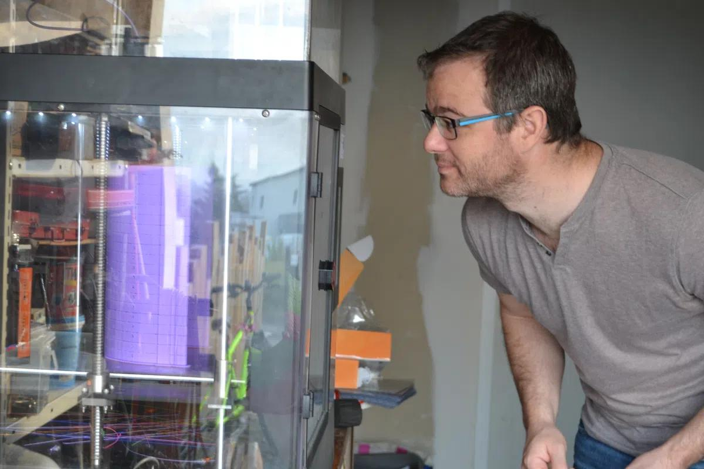

Interview avec Mr Mercier (04/2020)
Pour cette première édition, nous avons interviewé Franck Mercier. Ingénieur électronique de formation, il est aujourd’hui ingénieur à Polytech Angers et accompagne des projets de recherche en amont (réponse aux appels à projets, recherche de financement, faisabilité), pendant (accompagnement technique, conception, fabrication), et en aval (publications, valorisations, etc.). Ayant une formation en électronique, il s’est rapproché assez naturellement des recherches en robotique. De plus, il effectue quelques enseignements au sein de Polytech Angers, tels que des TD et TP d’électronique numérique, des TP d’automatique ou encore les projets. En cette période de confinement, il a pris l’initiative, en lien avec Polytech Angers, d’aider le personnel soignant en imprimant des visières, via l’impression 3D.
C’est parti :
Alligator News : "Bonjour Monsieur Mercier, comment allez-vous durant ce confinement ?"
Franck Mercier : "Bonjour, je vais très bien, le confinement se passe bien !"
Alligator News : "Comment arrivez-vous à tromper l’ennui pendant ce confinement ?"
Franck Mercier : "Je ne m’ennuie pas durant ce confinement, grâce au travail, puisque je continue à travailler de chez moi, et je reste régulièrement en contact avec mes collègues. Nous organisons par exemple une visio-café tous les vendredis afin de se retrouver. J’arrive aussi à garder un rythme de travail régulier, qui diffère un peu, puisque je peux me lever à 8h. Et au niveau du travail en lui-même, c’est de la recherche et des projets en informatique. J’ai aussi des enfants, pour lesquels je m’occupe de leur donner des cours, et puis j’ai l’impression des visières, qui demande du temps. Je ne m’ennuie pas !"
Alligator News : "Et justement, au niveau de la fabrication des visières, d’où vous est venu l’idée ?"
Franck Mercier : "Je suis dans deux réseaux d’impression 3D, un réseau du CNRS et un d’électroniciens. J’ai vu apparaître dans ces réseaux, dès le début du confinement, des post d’impression 3D de visières. Au départ, ce n’était pas que des visières, mais aussi des respirateurs, des valves pours les respirateurs, c’était différentes pièces pour aider le personnel soignant. J’ai alors commencé à en parler avec Fabrice Guérin, le directeur de Polytech Angers, et Agnès Lafon Delpit, la responsable administrative, et je leur ai dit qu’il y a des actions qui commence à apparaître ici et là, en France, et que nous avons l’imprimante 3D à Polytech, qui pourrait être utilisée. J’ai continué de me renseigner, voir un peu comment se structuraient ces initiatives. Si vraiment il y en avait une qui prenait forme, on adhérerait au projet, en apportant notre petite pierre à l’édifice. Mais la réalité des choses, c’est que ces projets ne se sont pas bien structurés. Je voyais, jour après jour, qu’il y en avait 2 ou 3 du CNRS, 2 ou 3 de la part d’entreprise, mais tout ce qui était national traînait à se mettre en forme. J’ai donc appelé l’entreprise Exprezis, qui travaille beaucoup avec Polytech, spécialisée dans l’impression 3D. J’ai eu le dirigeant, qui m’a confirmé qu’au niveau national, ce n’était pas bien structuré, mais qu’au niveau local, il y avait des actions. Il m’a redirigé sur un groupe Facebook, visière solidaire. Sur ce groupe, il y avait des instructions assez claires, sur qui demandent des visières, ainsi que des modèles STL pour des visières, que j’ai récupéré. Je suis donc revenu vers Fabrice Guérin et Agnès Lafon Delpit, pour savoir s’ils voulaient se raccrocher au projet. La direction a donc pris la décision de se raccrocher et de commencer la production. J’ai donc récupéré la machine de Polytech, je l’ai ramenée chez moi. Je peux donc produire en H24. C’est une production en continue, avec des modèles empilables. J’imprime des blocs que je détache. Aujourd’hui j’imprime 16 visières en une journée, mais avec le modèle précédent, j’en imprimais 20. Ce projet, de participer à cette action solidaire, fait partie des valeurs de l’école."
Alligator News : "Au niveau des matières premières, est-ce l’école qui fournit?"
Franck Mercier : "Exactement, l’école paye l’ensemble des matières premières !"
Alligator News : "Et comment les transmettez-vous au personnel de santé ?"
Franck Mercier : "C’est l’université d’Angers qui m’a fait une autorisation, l’attestation d’employeur, qui me permet de me déplacer. Cela me permet de me déplacer les jours de livraison. J’ai ainsi pu livrer la clinique St Léonard, l’ICO, l’Institut de Cancérologie, des EHPAD, ainsi que quelques commerçants, même si je me focalise en priorité sur le personnel soignant."
Alligator News : "Et pour ces livraisons, y a-t-il une plateforme mettant en contact ceux qui livrent et ceux qui demandent ?"
Franck Mercier : "Au départ, il n’y avait pas de plateformes, c’était le réseau de connaissance. J’ai accès au cabinet de pneumologie, et je connais le directeur de la clinique St Léonard, ce qui m’a aidé. C’est là l’intérêt de fédérer l’action, puisque certaines personnes vont avoir le carnet d’adresse, afin de pouvoir centraliser les demandes. Et au niveau de l’université, c’est Pascal Richomme qui est chargé de fédérer les demandes, et de les distribuer aux fabricants, les “makers”. On a ainsi accès à un fichier Excel mettant en corrélation les demandes et les potentiels fabricant. C’est donc là l’intérêt de tout centraliser, la communication est plus simple."
Alligator News : "Au niveau du modèle, entre le moment où vous êtes passé du groupe Facebook à l’université, avez-vous gardé le même ?"
Franck Mercier : "Au départ, j’imprimais avec le modèle du groupe Facebook. Ce modèle a été réfléchi et régulièrement upgradé, j’imprimais avec le modèle 13 alors que sur le groupe, ils étaient au modèle 22. Lorsque j’ai rejoint l’université, je suis passé au modèle ENSAM. Alors pourquoi ce modèle ? c’est un modèle qui a été créée par l’ENSAM de Bordeaux et il a été validé par le CHU de Bordeaux. C’est à dire qu’il a été testé par le personnel soignant du CHU, il a été testé en désinfection, il respectait beaucoup de contraintes, comme l’absence de bords coupant, pouvant couper les gants. C’est pourquoi aujourd’hui j’en imprime que 16 par jour, ce modèle étant plus épais par rapport à celui du groupe Facebook."
Alligator News : "Pour la visière, elle est réutilisable ou à usage unique ?"
Franck Mercier : "La visière est en 2 parties. Il y a l’arceau, imprimé en 3D, et il y a l’écran, qui correspond à des films plastiques de rétro projecteur. Ces films plastiques ne doivent pas être trop fins, cela ne tiendra pas, ni trop épais, sinon cela joue sur l’opacité de la visière. Je prends donc une épaisseur de 200 microns. De plus, ces modèles sont travaillés afin d’être réutilisables, c’est à dire qu’ils vont être immergés pour être désinfectés, dans des bains de javel ou d’alcool, comme un processus de désinfection normal, avant d’être réutilisés."
Alligator News : "Pour les étudiants, qui ont accès à une imprimante 3D chez eux, est-ce que vous savez comment ils doivent s'y prendre s'ils souhaitent imprimer ces visières ?"
Franck Mercier : "Le lien privilégié, c’est Mr Richomme, qui est l’organisateur du groupe au sein de l’université. Mais pour les étudiants de Polytech, ils peuvent passer par moi s’ils le souhaitent, il faudra juste que je vois pour leur fournir la matière première, il n’y a pas de raison que ce soit eux qui payent. Après, au stade où on en est aujourd’hui, avec l’ENSAM qui va pouvoir faire 400 masques par jour, je suis, à titre personnel, cela n'engage que moi, un peu moins persuadé de l’intérêt de participer. Au début, il y avait un intérêt, parce qu’il y avait tout à faire, mais maintenant que cela se structure et qu’il y a des gros moyens de production en place, le faire personnellement commence à perdre de l’intérêt."
Alligator News : "Merci pour vos réponses, est ce que vous avez un message à faire passer aux étudiants ?"
Franck Mercier : "Je pense surtout aux étudiants qui sont seuls dans leur appartement, qui n’ont pas la chance d’avoir une maison avec un jardin, pour qui le confinement est plus pénible. Et moi-même, comme l’équipe enseignante sommes à l’écoute s’il y en a qui sont en difficulté. Ils peuvent donc joindre de manière individuelle n’importe quel enseignant de Polytech, moi y compris, nous sommes à l’écoute. Je dirai aussi qu’il faut trouver le bénéfice dans toutes les situations, même si c’est un petit peu dur de voir des choses positives en ce moment. C’est un moment pour se ressourcer, se concentrer sur soi. Il faut juste essayer, dans tous les cas, de rester positif !"

C'est ainsi que se conclut la première interview, encore un grand merci à Mr Mercier ! Rendez-vous à la prochaine édition pour découvrir davantage la vie des enseignants !